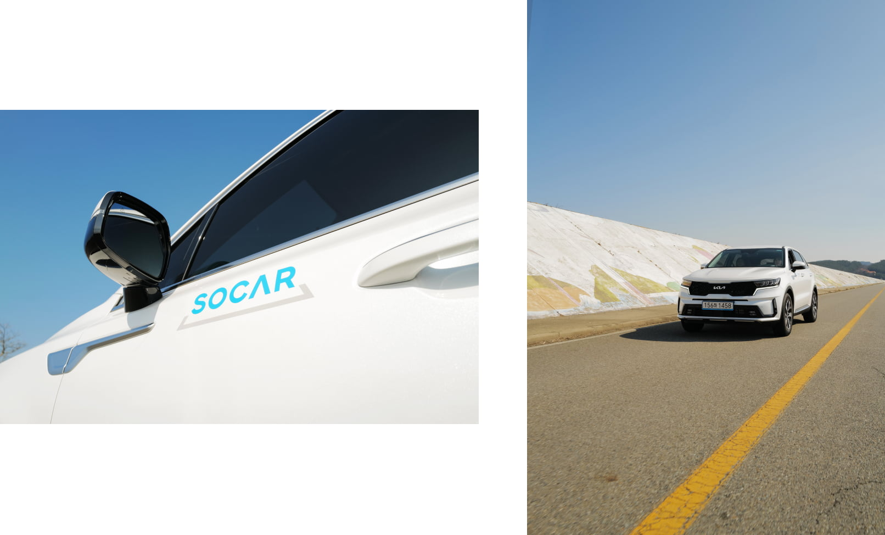
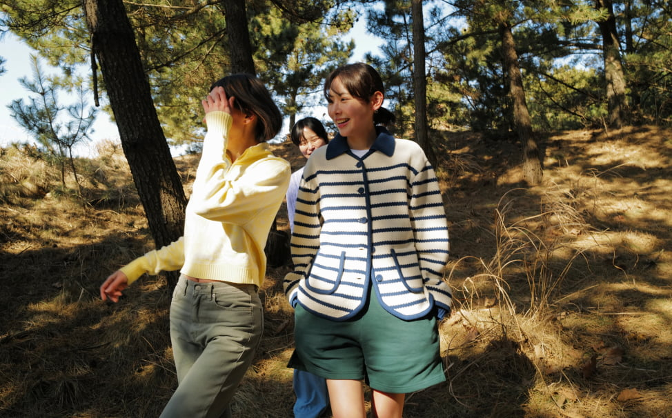
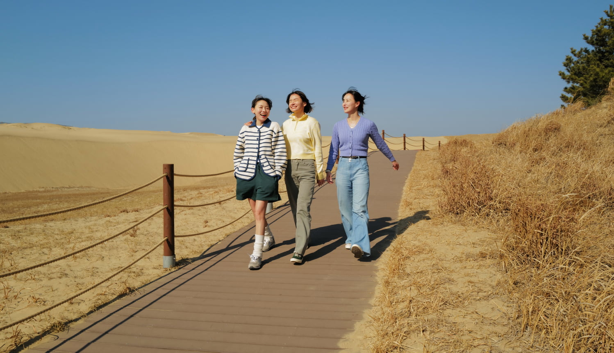
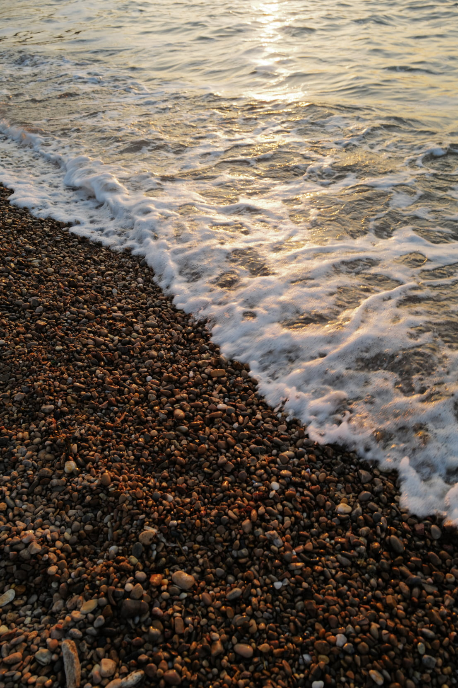
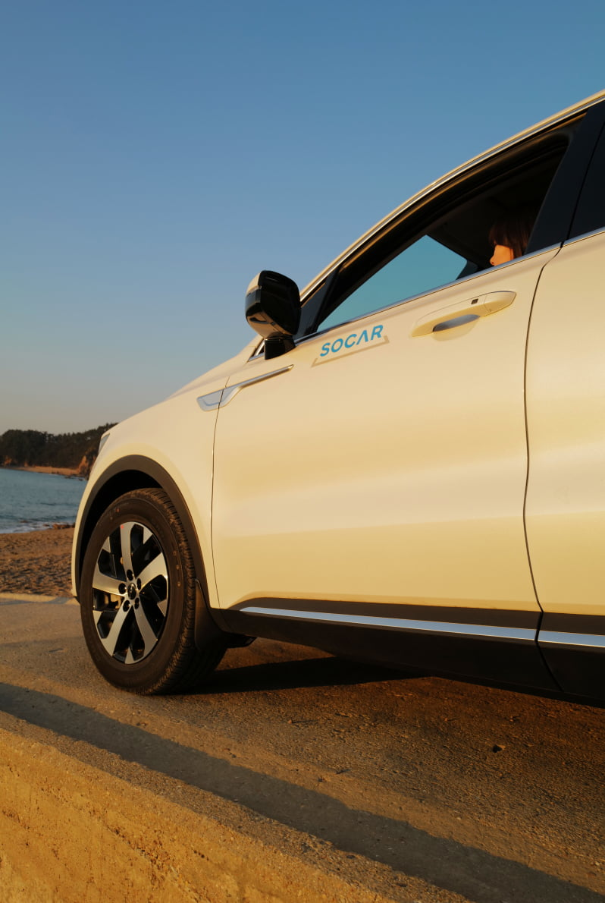
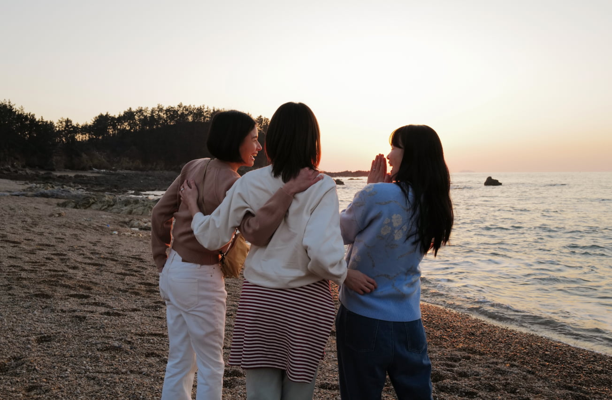
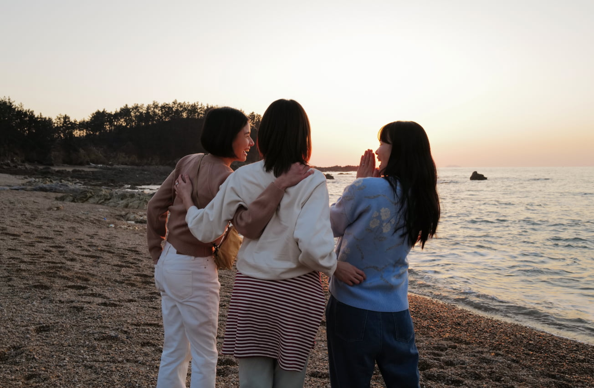

- intro
- 우리에게 휴식은 꼭 필요하다. 일주일 중 오일을 앞만 보며 달려왔다면,
적어도 이틀은 ‘아, 이번주도 열심히 살았다!’ 하면서 스스로를 다독이는 그런 시간 말이다.
휴식을 보내는 방법은 사람마다 다양하다. 누군가는 좋아하는 노래를 들으며 산책을 하고, 또 누군가는 좋아하는 사람들과 왁자지껄 시간을 보내기도한다. 이토록 가지각색의 휴식을 모두 담은 곳을 묻는다면, 망설임 없이 태안을 말하겠다.
태안은 ‘태평하여 평안하다’라는 지명 뜻에 걸맞는 곳이다. 바다의 잔잔하고도 강렬한 파도를 볼 수 있는가 하면, 한국에서 쉽게 볼 수 없는 사구를 거닐 수 있는 다양한 매력을 가진 곳.
우리는 멈추고, 머무르고, 떠나갈 수 있는 태안에 대해 더 소개하고 싶다. - 이원방조제
- 아픔과 희망이 공존한 곳.
-

이원방조제는 2007년 허베이 스피리트호 기름 유출 사고로 아픔과 희망이 공존하는 곳이다. 그때의 절망과 아픔이 언제 있었냐는듯 너무나도 잔잔한 모습을 보니 자연의 회복력에 대해 경이로움마저 느낄 수 있었다.
이원방조제에는 옅지만 알록달록한 색으로 덮여있는 2.7km 길이의 벽화가 눈에 띈다. 130만명의 자원봉사들과 함께 기름 유출 사고의 아픔을 극복하고 환경과 생명의 소중함을 간직하기 위해 만들어진 벽화라고 한다. 15년이 지난 지금 벽화의 형체는 흐릿하지만, 그때의 염원은 더 선명하게 묻어있음을 느꼈다.
-
길게 뻥 뚫린 방조제 위를 시시콜콜한 이야기와 함께 아무 생각없이 걷다보면, 머릿속을 휘집고 다니던 고민들이 다 무슨 소용인가 싶다. 날이 좋다면 오랜시간 방조제에 앉아 시간을 보내보길, 분명 그곳에서의 시간이 천천히 흘러가길 바랄 것이다.
- 신두리 해안사구
- 바다 바람의 노래가 만든 신두리 해안사구
-
태안에서 가장 독특한 곳을 꼽자면 망설임 없이 이 곳, 신두리 해안사구를 고를테다. 외국에서나 볼 법한, 거대한 모래 언덕과 그 앞에 위치한 바다의 이질적인 모습이 묘하게 어울리니 말이다.
신두리 해안사구의 겹겹이 쌓인 모래는 오랜 시간의 흔적으로도 볼 수 있다. 빙하기 이후 1만 5천년 전부터 서서히 형성되기 시작해, 북서 계절풍의 강한 바람으로 모래가 해안가로 운반되면서 언덕을 이룬 퇴적지형이기 때문이다.
 -

트레킹 코스를 따라 걷다보면 해안사구의 황량함 가운에서도 뿌리를 내리고 푸른 잎을 튄 나무들의 질긴 생명력이 시선을 사로잡는다. 아마도, 해안사구의 황량한 모래언덕 가운데서도 따뜻함을 느낄 수 있었던 까닭은, 여기 식물들의 푸릇함 때문이 아닐까.
- 파도리 해수욕장
- 파도가 아름답고 예쁜 곳
-


파도가 아름답고 예쁘다고 해 지어진 이름. 파도리. 이 곳의 귀여운 포인트를 한 가지 더 말하자면, 모래가 아닌 작은 돌 ‘해옥’이 깔려 있어 파도가 칠 때 들리는 조약돌 부딪히는 소리이다.
-
만약 해가 떨어질 즈음, 파도리 해수욕장을 가면 당신의 손은 쉴새없이 바빠질 것이다. 울퉁불퉁한 갯바위와 투명한 물에 붉은 물감을 풀어 넣은듯한 하늘을 평생 사진으로 간직하고 싶어질테니 말이다.
크고 강렬했던 태양이 지평선 넘어 조금씩 자취를 감출 때, 바삐 셔터를 누르던 사람들은 드문드문 서 있던 곳에서 약속이나 한듯 자리를 잡고 멍하게 바다를 바라본다. 바로 이런 이유로 파도리 해수욕장은 여행의 마지막 순간 방문하길 추천한다.
 
